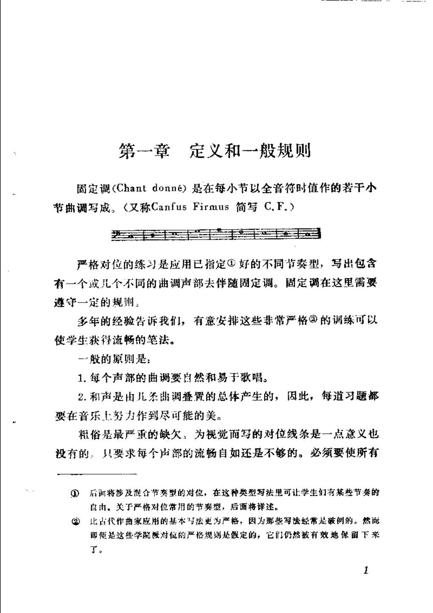

PDF 第 5 页
第一章 定义和一般规则
第一章定义和一般规则
固定调（Chantdonné）是在每小节以全音符时值作的若干小
节曲调写成。（又称CanfusFirmus简写C.F.）
严格对位的练习是应用已指定好的不同节奏型，写出包含
有一个或儿个不同的曲调声部去伴随固定调。固定调在这里需要
遵守一定的规则，
多年的经验告诉我们，有意安排这些非常严格②的训练可以
使学生获得流畅的笔法。
-般的原则是：
1.每个声部的曲调要自然和易于歌唱。
2.和声是由儿条山调叠置的总体产生的，因此，每道习题都
要在音乐上努力作到尽可能的美。
粗俗是最严重的缺欠，为视觉而写的对位线条是一点意义也
没有的：只要求每个声部的流畅自如还是不够的。必须要使所有
后面将涉及混合节奏型的对位，在这种类型写法里可让学生们有某些节奏的
自由。关于严格对位常用的节奏型，后面将详述。
比占代作曲家应用的基本与法更为严格，因为那些写法经常是破例的。然面
2
即便是这些学院派对位的严格规则是假定的，它们仍然被有效地保留下来
T。
1
- 严格复对位是进入自由写作的训练，不是创作禁令
复对位的严格练习把可转位性、协和框架与声部独立压缩成可控条件；实际作品仍按风格放松细节。
“严格对位的练习是应用已指定好的不同节奏型，写出包含有一个或儿个不同的曲调声部去伴随固定调。”